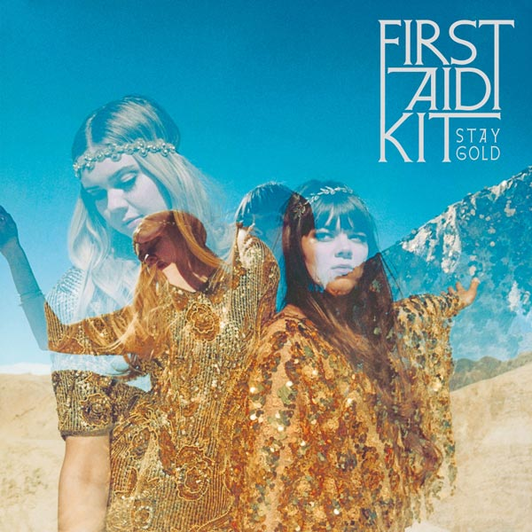

Ben Howard – I forget where we were
Geplaatst door: Jodi_De_Smit op December 5, 2014
De Britse singer songwriter (en surfer) Ben Howard brak in 2011 door met het album Every Kingdom. Deze groeibriljant die gaandeweg steeds meer..
Geplaatst door: Jodi_De_Smit op December 5, 2014
De Britse singer songwriter (en surfer) Ben Howard brak in 2011 door met het album Every Kingdom. Deze groeibriljant die gaandeweg steeds meer..
Geplaatst door: Jodi Lukoki op December 2, 2014
Zelf vindt Dave Grohl Foo Fighters de domste bandnaam ooit. Toen hij aan dit project begon, had hij nooit kunnen bevroeden dat deze band..
Geplaatst door: Erik Odijk op November 29, 2014

Het zou ook wel heel erg vreemd zijn als van de plotseling uit het leven weggerukte Amy Winehouse geen onbekende opnamen bewaard zouden..
Geplaatst door: Maaike Tol op November 15, 2014
Na een alleraardigst debuut, maakten de Zweedse zusjes Johanna en Klara Söderberg (nu 23 en 21) in 2012 pas echt indruk met het prachtige The Lion’s Roar en de hemels..
Geplaatst door: Jarno Verhoogt op November 5, 2014
Babak-o-doestan ( Babak en vrienden) speelt zelf geschreven werk met invloeden uit jazz, fado, balkan, Turkse en Iraanse muziek. Teksten zijn van oude en moderne Iraanse dichters of zanger/gitarist..
Geplaatst door: Jodi Smit op Oktober 30, 2014

Weinig artiesten zijn zo onvoorspelbaar als Neil Young. Na zijn doorbraak met The Buffalo Springfield koos Young – zijn uitstapjes met Crosby..
Geplaatst door: Brit_89 op Oktober 1, 2014
De carrière van Anouk kent vele pieken en dalen. Zo werd haar deelname aan het Eurosongfestival een groot succes..
Geplaatst door: Daantje_NL op September 28, 2014
De wegen van Julian Casablancas zijn nog altijd vrij ondoorgrondelijk. Op de eerste platen van The Strokes ging dat gepaard met een onweerstaanbare charme op muzikaal vlak, maar de laatste jaren heeft dat opvallend weinig opgeleverd..
Geplaatst door: Erick_Perick op September 5, 2014

Voor de zevende studioplaat besloot Tosca, een elektronisch downtempo-duo uit Wenen, het eens over een iets andere boeg te gooien. Zo valt gelijk de snelle release al op..
Geplaatst door: xX_Maaaaike_Xx op September 14, 2014

Voor de zevende studioplaat besloot Tosca, een elektronisch downtempo-duo uit Wenen, het eens over een iets andere boeg te gooien. Zo valt gelijk de snelle release al op..
Geplaatst door: Halloooo_JAn op September 3, 2014

De Britse singer songwriter (en surfer) Ben Howard brak in 2011 door met het album Every Kingdom. Deze groeibriljant die gaandeweg steeds meer bij het grote publiek terecht kwam bevatte natuurlijk de single Keep Your Head Up..
Geplaatst door: Henk_Ingrid op September 1, 2014

De pretenties zijn enorm als altijd, bij de Chileense producer Cristian Vogel. Zijn nieuwe album Polyphonic Beings laat hij vergezeld gaan van citaten van de componist Karlheinz Stockhausen, iets over 'atomaire lagen van muzikale perceptie' - probeer..
Geplaatst door: 1337_owner op Augustus 27, 2014
Sinds Joris Voorn afstudeerde als architect heeft hij zich volledig op zijn muzikale carrière gestort. Sindsdien bracht hij 2 albums uit, Future History (2004) en From A Deep Place (2007) en maakte onnoemelijk veel singles, EP’s en remixen voor anderen..
Geplaatst door: Bucket766 op Augustus 25, 2014
Het eerste album Flatland van de Berlijnse producer en muzieksoftwaremaker TJ Hertz ademt weliswaar veel elektronische muziekgeschiedenis, maar weet toch ook een heel nieuw dancegevoel op te roepen, dankzij een technisch razend knap en misschien juist daardoor herkenbaar eigen geluid..
Geplaatst door: Pipo op Augustus 21, 2014

2CD, bevat het album "Immunity" plus de remix-ep "Asleep Versions" Vorig jaar bracht deze producer Immunity uit en sindsdien blijft ie ermee pielen, zanglijntje hier, remixje daar..
Geplaatst door: Harry Potter fan op Augustus 16, 2014

Het onvermijdelijke einde. Het alom bekende duo Svein Berge en Torbjørn Brundtland, beter bekend als Röyksopp, kondigde hun afscheid al eerder aan, maar voor de vele fans en volgers blijft die keuze..
Geplaatst door: Tyrion Lannister op Augustus 10, 2014

Het gebeurt zelden dat je een danceplaat, laat staan een remixalbum, blind kan kopen simpelweg door de namen op de hoes. DJ Koze is echter niet je gemiddelde dance-artiest. De Duitse Stefan Kozalla is een..
Geplaatst door: Jaime Lannister op Augustus 5, 2014

From way back in 2002 Club des Belugas has become one of the leading Nu-Jazz bands in Europe, most probably in the world. Now they present their 8th studio album featuring a ton of women power..
Geplaatst door: Cercei Lannister op Augustus 1, 2014

JoJo Effect is an established band / project from Germany with international success. In their genre, they probably belong to the top Ten in the world. The fourth album of the electro-lounge-project comes with 16 tracks and is so pioneering, groovy..
Geplaatst door: Reek op Juli 30, 2014

After the great success of the last tour in Brazil "Alemanha groove", Bebo Best dedicates an album to the great country of samba and bossa nova, enriching the sound carioca with contamination nujazz, funk, and..